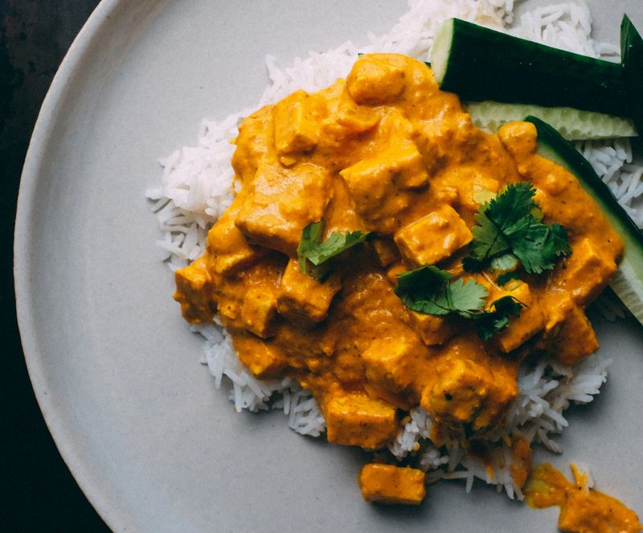

Tofu au beurre
Préparation: 20 minutes
Cuisson: 30 minutes
Total: 50 minutes
Ingrédients
-
450 g de tofu

-
1 oignon
-
2 gousses d'ail
-
1 c. à soupe de gingembre frais haché
-
2 c. à soupe de beurre
-
400 mL de tomates en dés
-
1 c. à soupe de pâte de tomate
-
1 1/2 t d'eau
-
1/4 c. à thé de flocons de piment broyé
-
1 1/2 c. à thé de paprika
-
1 1/2 c. à thé de garam masala
-
1/4 c. à thé de muscade moulue
-
3/4 t de crème (15%)
-
coriandre fraîche (facultatif)
-
menthe fraîche (facultatif)
Instructions
Sauce
Hacher l'oignon, l'ail et le gingembre.
- 1 oignon
- 2 gousses d'ail
- 1 c. à soupe de gingembre frais haché
Dans une grande poêle à feu moyen, faire revenir l'oignon dans 2 c. à soupe de beurre. Vers la fin de la cuisson, ajouter l'ail et le gingembre. Faire revenir 2 minutes.
Ajouter les tomates, l'eau et les épices. Porter à ébullition et laisser mijoter 15 minutes
- 400 mL de tomates en dés
- 1 c. à soupe de pâte de tomate
- 1 1/2 t d'eau
- 1/4 c. à thé de flocons de piment broyé
- 1 1/2 c. à thé de paprika
- 1 1/2 c. à thé de garam masala
- 1/4 c. à thé de muscade moulue
Ajouter 3/4 t de crème (15%) et continuer à cuire 5 minutes
Saler et poivrer
Tofu
Pour donner un petit croustillant au tofu, vous pouvez le faire revenir à la poêle pendant que la sauce mijote. Couper 450 g de tofu en cubes. Éponger ou rouler dans un peu de fécule de maïs pour absorber l'humidité. Faire revenir à la poêle avec 1 c. à soupe de beurre.
Mélanger les cubes de tofu à la sauce et servir avec du riz et de la coriandre fraîche (facultatif) et de la menthe fraîche (facultatif).